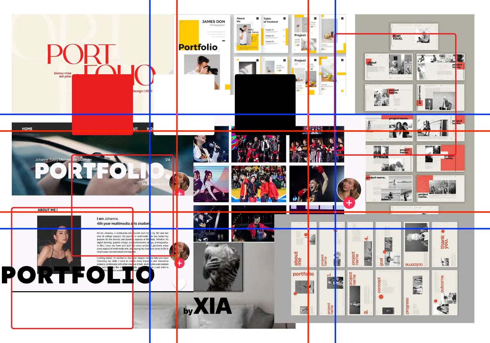
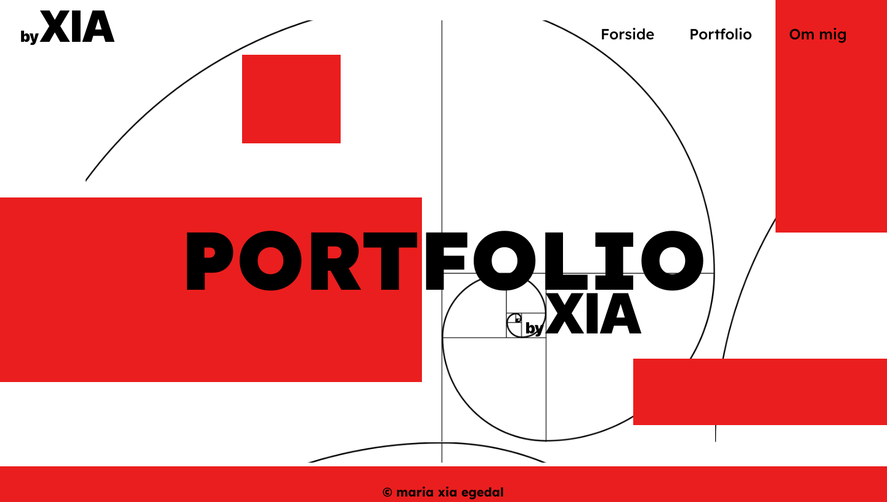

Portfolio
Tema 6 - portfolio-eksamen
Tema beskrivelse
Formålet med temaet er, at udarbejde et portfolio website, som præsenter mig som multimediedesigner, samt de opgaver jeg har løst på 1. semester. Se hele min proces i Figma.
Moodboard
Forside
Styletile
Jeg har valgt en modernistisk stil, hvor form følger funktion. Jeg har derfor valgt et meget stramt udtryk. Jeg har brugt kontrastfarverne sort/hvid. For at fange opmærksomheden og fremhæve elementer har jeg tilføjet primærfarven rød. Jeg har valgt at bruge geometriske former samt fontene Lexend Deca og Inter, som er proportionale sans serif fonte.
Forsiden har jeg opbygget på basis af en fibonaccispiral (den gyldne spiral), idet denne side fungerer som introduktion til min grafiske stil og skal lede over til de øvrige sider. Portfoliosiden har jeg opbygget på basis af ens størrelse moduler (kvadrater).